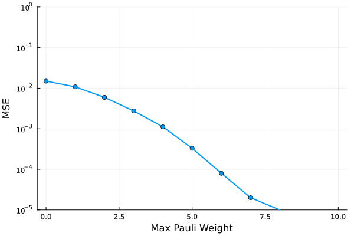
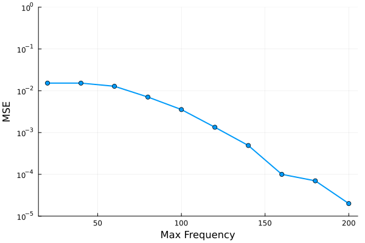
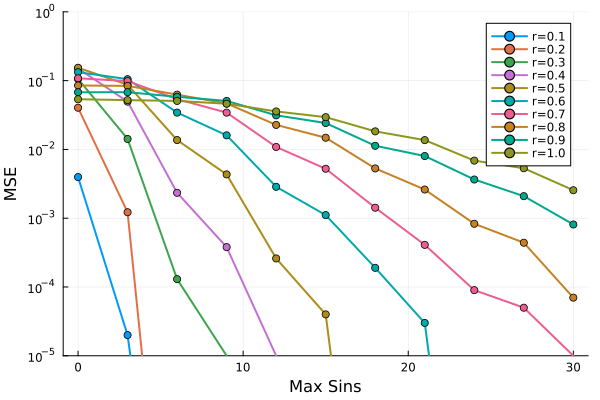
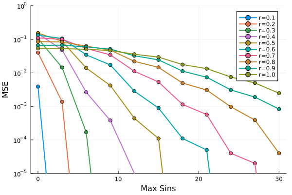

Numerical Certificates
Numerical certificates is what we call protocoles for numerically estimating the truncation error we make during propagation. Currently, we only support a limited number of gates, i.e., PauliRotations and CliffordGates.
using PauliPropagation
using Plotsnq = 25
pstr = PauliString(nq, :Z, 13)
nl = 12
topo = bricklayertopology(nq; periodic=true)
circuit = hardwareefficientcircuit(nq, nl; topology=topo);
nparams = countparameters(circuit)We defined the usual setup, but now, instead of calling propagate(), we use estimatemse(). This function will take the almost all of our default truncations, as well as a custom truncation function, and the number of Monte Carlo samples to estimate the error with. The one truncation that is not supported here is common min_abs_coeff. It looses its meaning in the average error we compute here. But more about that later.
Testing Weight Truncation
Let us test the mean square error we make via weight truncation, averaging over the full parameter space of the circuit's parametrized gates.
Ws = 0:10
mcsamples = 100_000
@time weight_errors = [estimatemse(circuit, pstr, mcsamples; max_weight=W) for W in Ws];
# where errors are zero, replace with small number to avoid log(0) error
weight_errors[weight_errors .<= 1e-10] .= 1e-10 16.064676 seconds (12.02 M allocations: 330.382 MiB, 1.59% gc time, 4.23% compilation time)plot(Ws, weight_errors, yscale=:log10, xlabel="Max Pauli Weight", ylabel="MSE", ylim=(1e-5, 1e0), label="", linewidth=2, marker=:circle, fmt = :png)
We see that the average error decause quite quickly with the maximum Pauli weight, in fact roughly exponentially. Keep in mind though, that the simulation time with propagate will also scale exponentially in this truncation.
Testing Frequency Truncation
What we call frequency takes the place of the min_abs_coeff coefficient truncation in the average case. We define frequency as the number of splits/branchings at PauliRotation gates. If a path has split $l$ times, then the average coefficient of that path will be $(\frac12)^l$. Note however that the error we measure here is an over-estimation! Because we merge paths in propagate(), we can effectively propagate higher frequency paths with a lower frequency path at no additional computational cost. We don't do merging in the numerical certificate, which is why the average error will be over-estimated.
freqs = 20:20:200
mcsamples = 100000
@time freq_errors = [estimatemse(circuit, pstr, mcsamples; max_freq=freq) for freq in freqs]
# where errors are zero, replace with small number to avoid log(0) error
freq_errors[freq_errors .<= 1e-10] .= 1e-10 36.664378 seconds (10.45 M allocations: 320.364 MiB, 0.73% gc time, 0.67% compilation time)plot(freqs, freq_errors, yscale=:log10, xlabel="Max Frequency", ylabel="MSE", ylim=(1e-5, 1e0), label="", linewidth=2, marker=:circle, fmt = :png)
Again, we have strongly decaying mean square error, but note that absolute value of the truncation are significantly higher that the values formaximum Pauli weight. We only reach around 1e-5 error with a frequency truncation around 180. This is a very large number and should be combined with other truncations.
More practically, if we know that the parameter range of the PauliRotation gates is small, we can employ the max_sins truncation.
Test Small-Angle Truncation
Here is a loop that additionally passes the radius r for the parameters, i.e., the range around zero where they are uniformly sampled from. We thus compute the average error in a small angle range. For large radii, we expect to need significantly higher max_sins truncation values.
nsins = 0:3:30
rs = 0.1:0.1:1.0
mcsamples = 100000
pl = plot(yscale=:log10, xlabel="Max Sins", ylabel="MSE", ylim=(1e-5, 1e0), fmt = :png)
for r in rs
@time sins_errors = [estimatemse(circuit, pstr, mcsamples, r; max_sins=ns) for ns in nsins]
# where errors are zero, replace with small number to avoid log(0) error
sins_errors[sins_errors .<= 1e-10] .= 1e-10;
plot!(nsins, sins_errors, label="r=$(round(r, sigdigits=2))", linewidth=2, marker=:circle)
end
pl 37.672913 seconds (12.52 M allocations: 365.270 MiB, 0.17% gc time, 0.60% compilation time)
37.470569 seconds (12.12 M allocations: 345.141 MiB, 0.13% gc time)
37.605430 seconds (12.12 M allocations: 345.141 MiB, 0.72% gc time)
37.437835 seconds (12.12 M allocations: 345.141 MiB, 0.14% gc time)
37.622662 seconds (12.12 M allocations: 345.141 MiB, 0.71% gc time)
37.444723 seconds (12.12 M allocations: 345.141 MiB, 0.12% gc time)
37.399851 seconds (12.12 M allocations: 345.141 MiB, 0.17% gc time)
37.747168 seconds (12.12 M allocations: 345.141 MiB, 0.63% gc time)
37.587847 seconds (12.12 M allocations: 345.141 MiB, 0.12% gc time)
38.002047 seconds (12.12 M allocations: 345.141 MiB, 0.77% gc time)
Combining Truncations
To get the most out of Pauli propagation, you probably want to combine truncations. Let us combine max_sins with max_weight.
nsins = 0:3:30
rs = 0.1:0.1:1.0
pl = plot(yscale=:log10, xlabel="Max Sins", ylabel="MSE", ylim=(1e-5, 1e0), fmt = :png)
for r in rs
@time sins_errors = [estimatemse(circuit, pstr, 100000, r; max_sins=ns, max_weight=6) for ns in nsins]
# where errors are zero, replace with small number to avoid log(0) error
sins_errors[sins_errors .<= 1e-10] .= 1e-10;
plot!(nsins, sins_errors, label="r=$(round(r, sigdigits=2))", linewidth=2, marker=:circle)
end
pl 33.907803 seconds (12.48 M allocations: 363.122 MiB, 0.17% gc time, 0.62% compilation time)
34.164219 seconds (12.12 M allocations: 345.134 MiB, 0.76% gc time)
33.594587 seconds (12.12 M allocations: 345.133 MiB, 0.13% gc time)
33.751174 seconds (12.12 M allocations: 345.133 MiB, 0.83% gc time)
33.500612 seconds (12.12 M allocations: 345.133 MiB, 0.12% gc time)
33.579823 seconds (12.12 M allocations: 345.132 MiB, 0.13% gc time)
33.872206 seconds (12.12 M allocations: 345.133 MiB, 0.76% gc time)
34.168588 seconds (12.12 M allocations: 345.134 MiB, 0.14% gc time)
34.139134 seconds (12.12 M allocations: 345.134 MiB, 0.79% gc time)
34.080515 seconds (12.12 M allocations: 345.134 MiB, 0.13% gc time)
The error is pretty much identical. But we in the following we see that the runtime of propagate() is significantly faster with both truncations:
using Random
Random.seed!(42)
thetas = randn(countparameters(circuit))*0.5With both truncations:
@time psum_both = propagate(circuit, pstr, thetas; max_sins=20, max_weight=6);
print("Number of Paulis: ", length(psum_both)) 12.471093 seconds (191.90 M allocations: 5.202 GiB, 8.49% gc time, 13.41% compilation time)
Number of Paulis: 170529With only max_sins truncation:
@time psum_sins = propagate(circuit, pstr, thetas; max_sins=20);
print("Number of Paulis: ", length(psum_sins)) 87.136845 seconds (1.52 G allocations: 43.736 GiB, 6.02% gc time, 0.49% compilation time)
Number of Paulis: 1474496Significantly slower for a potentially insignificant accuracy improvement.
overlapwithzero(psum_both), overlapwithzero(psum_sins)(-0.4966755215241979, -0.49375542669796074)overlapwithzero(psum_both) - overlapwithzero(psum_sins)-0.002920094826237174